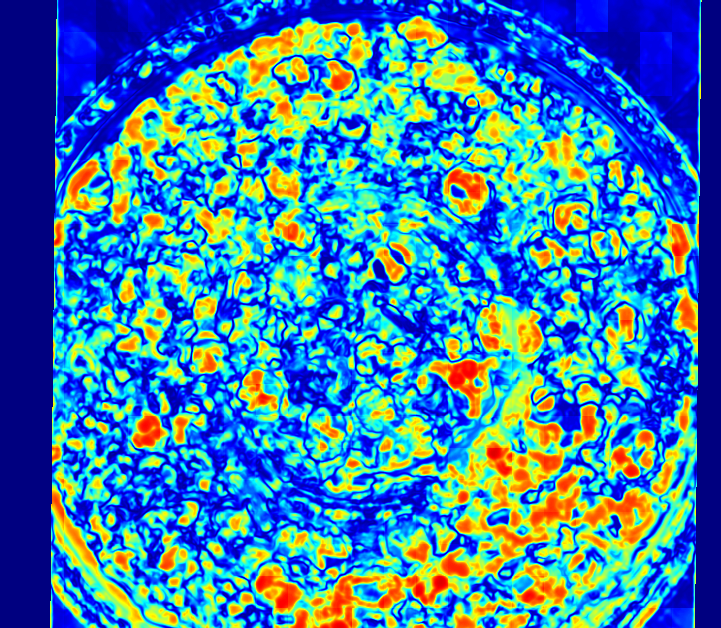

Precomputed result
Select a sample pair
Local Python pipeline output appears here.
--confidence
--boxes
localsource
Pipeline output
Local visualization

Dataset pairs
10 curated samples
Loading samples...